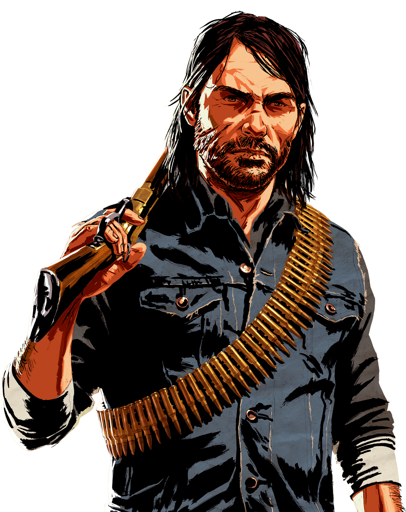

Galeria
John Marston
John Marston é um personagem fictício da série de jogos Red Dead da Rockstar Games. É o protagonista do jogo de 2010 Red Dead Redemption, onde a ação se passa em 1911 durante o declínio do Velho Oeste em que Marston é forçado a localizar e a matar os últimos membros do seu ex-grupo em troca da sua família.
